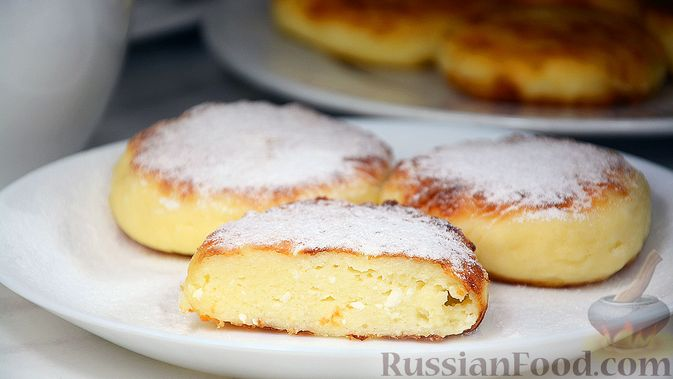

Домой
Сырники на сковороде

Описание
Сегодня готовлю сырники. По этому рецепту сырники получаются всегда
невероятно вкусными, пышными, мягкими и очень нежными, хорошо держат форму
и не расплываются на сковороде. Всем советую приготовить сырники по этому
рецепту, получается очень вкусно и всегда удачно.
Ингридиенты
- Творог жирный - 500 г
- Яйцо - 1 шт.
- Сахар - 2 ст. ложки
- Соль - 1 щепотка
- Масло растительное
- Мука - 3 ст. ложки + 2 ст. ложки (для панировки)
Шаги
-
В миску кладём творог, добавляем яйцо, сахар, ванилин или ванильный
сахар и соль.
- Всё перемешиваем
- Добавляем муку и снова перемешиваем
-
Ложкой набираем немного творожной массы, опускаем в муку и, хорошо
обсыпая мукой, формируем сырники
- Лишнюю муку стряхиваем и выкладываем на доску, присыпанную мукой
-
В сковороде разогреваем немного масла. Выкладываем сырники в разогретое
масло
-
Обжариваем сырники на умеренном огне до румяного цвета с двух сторон